Practical Adversarial Attacks on Spatiotemporal Traffic Forecasting Models
哇咔咔，明天就要2024年了嘞。
0 摘要
基于机器学习的交通预测模型利用复杂的时空自关联来提供全市交通状态的准确预测。（在交通预测中，通过分析历史交通数据中的自相关性模式，模型可以学习到交通状态之间的关联规律，并将这些规律应用于预测未来的交通状态）在本工作中，我们研究了时空流量预测模型的脆弱性，并提出了一个实用的对抗性时空攻击框架。
具体来说，不是攻击所有的地理分布数据源，一个迭代梯度引导的节点显著性方法被提出来去识别受害节点的时间相关性设置。此外，我们设计了一个时空梯度下降为基础的计划，在一个限制扰动下产生真实值对抗交通状态。同时，我们证明了对抗交通预测攻击的最坏表现。
在两个真实数据集上的大量实验表明，所提出的两步框架在各种先进的时空流量预测模型上取得了高达67.8%的性能下降。我们使用我们所提出的攻击进行对抗性训练，可以显著提高时空流量预测模型的鲁棒性。
代码：https://github.com/usail-hkust/Adv-ST。
1 结论
本文揭示了时空交通预测模型在对抗攻击下的脆弱性。我们提出了一个实用的对抗时空攻击框架，该框架对预测模型的结构不可知，并且可以推广到各种攻击设置。
具体来说，我们首先构建了一个迭代梯度引导的节点显著性方法。然后我们提出了一个时空梯度下降为基础的计划，通过灵活地运用各种对抗扰动方法来生成实值对抗交通状态。理论证明了在，在人类无法察觉的受害节点选择预算和扰动预算约束下，所提出两步走的框架的上界。最后在真实数据集上的大量结果验证了所提出框架的有效性。
2 介绍
机器学习时空预测模型对时空预测模型的鲁棒性研究很少。例如，图1显示，在随机选择的几个节点上注入轻微的对抗扰动会显著降低整个系统的流量预测精度。因此，本文研究了流量预测模型在对抗攻击时的脆弱性。
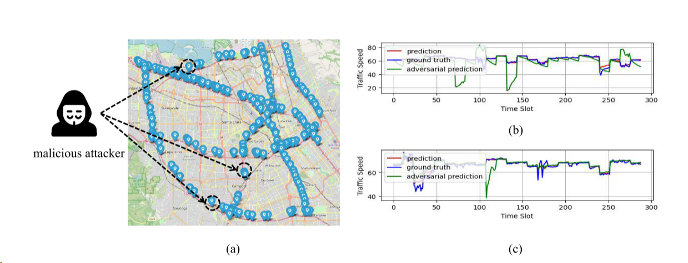
一个针对加利福尼亚州湾区交通网络时空预测模型的对抗性攻击实例，数据范围为2017年1月至2017年5月。
(a)对地理分布数据的对抗性攻击。恶意攻击者可能会将对抗示例注入到随机选择的地理分布数据源中。(如道路传感器)，误导整个交通预测系统的预测。
(b)受害节点准确率下降。通过在10%的受害节点上增加少于50%的交通速度扰动，我们发现在早高峰时段受害节点的准确率下降了60.4%。
(c)邻近节点的准确率下降。由于时空预测模型的信息扩散，对抗性攻击对邻近节点的准确率也降低了约47.23%。
两个主要挑战阻碍了现有对抗性攻击策略在时空流量预测中的应用。首先，交通预测系统通过利用地理分布数据源(例如，数百个道路传感器和数千个车载GPS设备)的信号进行预测。操纵所有数据源以同时注入对抗扰动是昂贵和不切实际的。此外，最先进的交通预测模型通过交通网络传播局部交通状态，以获得更准确的预测[5]。攻击一些任意的数据源将导致整个系统的节点变化影响。
如何在攻击预算有限的情况下识别出突出的受害节点子集，使攻击效果最大化是该算法面临的第一个挑战。其次，与现有大多数对抗性攻击策略侧重于时不变标签分类[8,9]不同，流量预测对抗性攻击的目标是破坏目标模型，对连续流量状态做出有偏差的预测。另一个挑战是，如何在不了解未来交通状况真相的情况下生成真正有价值的对抗例子。
具体而言，我们首先设计了一种迭代的梯度引导方法来估计节点的显著性，这有助于识别一小组依赖于时间的受害节点。在一定约束下，提出了一种时空梯度下降方案来引导攻击方向并生成实值对抗流量状态。所提出的攻击框架不受预测模型体系结构的影响，并可推广到各种攻击设置，即白盒攻击、灰盒攻击和黑盒攻击。同时，从理论上分析了对抗性流量预测攻击的最差性能保证。证明了时空交通预测模型的对抗鲁棒性与受扰节点数、最大扰动界和交通网络最大程度有关。
在两个真实世界的交通数据集上的大量实验研究证明了所提出的框架在最先进的时空预测模型上的攻击有效性。研究表明，攻击流量系统中10%的节点可以使预测的全局平均误差从1.975降低到6.1329。在扩展白盒攻击和黑盒攻击设置下，对抗性攻击的性能分别下降68.65%和56.67%。最后，我们还表明，将我们生成的对抗例子与对抗训练相结合，可以显著提高时空交通预测模型的鲁棒性。
3 背景和问题陈述
在本节中，我们首先介绍时空流量预测和对抗性攻击的一些基础知识，然后正式定义我们要解决的问题。
3.1 时空交通预测
令Gt =（V，E）表示时间步t处的交通网络，其中V是n个节点的集合（例如，区域、路段、道路传感器等）E是一组边。
原文说的很好，很专业。咱就直接复制了。大白话就是，输入过去t时刻所有的：当前的状态和交通网络，输出是未来t1时刻的交通状态估计。
原文如下：
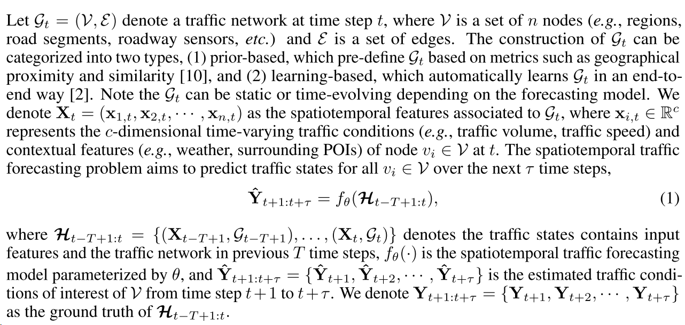
上述公式最重要的是Ht，表示要输入模型的东西。上述公式与最先进的基于图神经网络(Graph Neural Network, GNN)的时空交通预测模型一致[2,10,11,12]。
3.2 对抗性攻击
在给定的机器学习模型中，对抗性攻击的目的是通过生成最优对抗性实例来误导模型得出有偏差的预测。不多说了。
3.3 对时空交通预测的对抗性攻击
本工作旨在将对抗性攻击应用于时空流量预测模型。我们首先定义对抗交通状态如下:
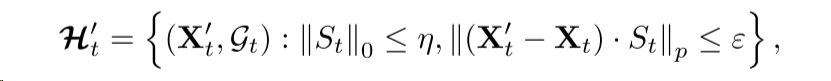
其中St是一个n×n的对角矩阵，第i个对角元素表示节点i是否为受害节点，X't是扰动的时空特征，被称为对抗时空特征。
我们通过受害者节点预算η和扰动预算ε来限制对抗性业务状态。请注意，根据对抗性攻击的定义，我们将Gt的拓扑结构保持不变，因为我们将邻接关系视为模型参数的一部分，可以以端到端的方式自动学习。
进攻目标。攻击者的目标是制作敌对的交通状态，以欺骗时空预测模型，从而得出有偏见的预测。形式上，给定时空预测模型fθ（·），针对时空流量预测的对抗性攻击定义为：
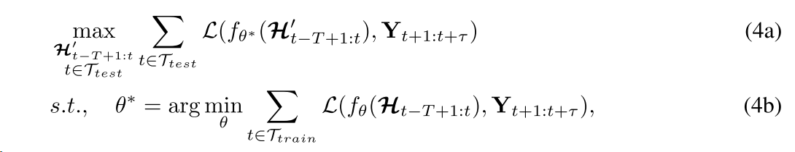
Ttest和Ttrain分别表示所有测试样本和训练样本的时间步长集合。L(·)是测量预测的交通状态与地面真值之间距离的损失函数，θ∗是训练阶段学习到的最优参数。
这个公式翻译成人话就是，第一，在测试阶段，最大化对抗样本的预测值和真实值之间损失函数的值。第二，模型的参数是训练过程中，正常样本的预测值和真实值的损失函数最小的参数。
由于时空流量预测设置下的ground truth(即未来的流量状态)在运行时不可用，因此实际对敌时空攻击主要属于灰盒攻击设置。然而，研究白盒攻击仍然有助于我们理解对抗性攻击的工作原理，有助于提高时空流量预测模型的鲁棒性(如应用对抗性训练)。
4 方法
在本节中，我们详细介绍了实用的对抗性时空攻击框架。具体来说，我们的框架包括两个步骤:(1)识别依赖时间的受害者节点，(2)攻击与对抗流量状态。
4.1 识别依赖时间的受害者节点
区分攻击时空预测和传统分类任务的一个点是在测试阶段是否能获得真值（ground truth）。因此，我们首先构造未来流量状态的代理标签来引导攻击方向。我们通过构建替代标签来代替真实标签。这个替代标签可能是根据其他信息或模型预测得到的，它可以作为攻击过程中的参考，指导我们对未来交通状态进行攻击的方向和调整。
原文如下：
大致意思是说，替代标签就是一个作用在之前状态上的函数的结果外加一个随机分布。然后又推导出相关节点显著性。时态节点显著性"是指在时空预测任务中，对于网络中的每个节点，我们通过分析其在时间维度上的变化和影响，来评估其重要性或显著性。时态节点显著性可以帮助我们理解节点在不同时间点上的贡献和影响力，进而指导我们在攻击或优化任务中的决策。
推导过程就是预测值和替代标签的损失函数对X求偏导再经过损失函数得到。并且损失函数通过迭代的基于梯度的对抗方法进行更新。
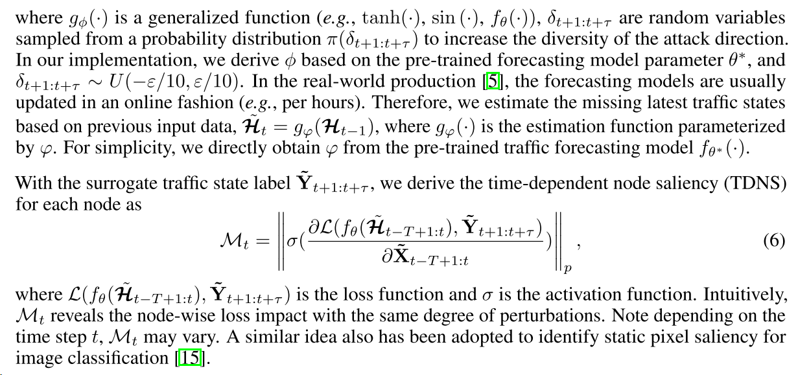
公式粘贴了。首先制作了对抗样本X‘，制作过程就是上面的式子，按照梯度的方向进行更新，然后用到了剪裁操作。
下面又讲了对于每批数据，H和Y，H是给预测模型的输入，Y’此时是代理的真值。那么时间相关节点显著性梯度由下式导出，使用的relu函数来更新Mt：
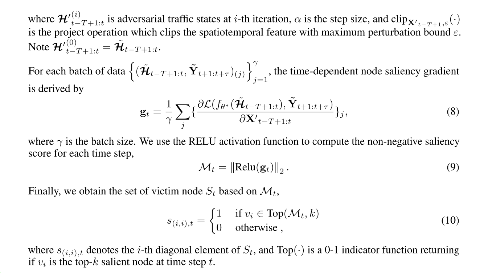
最后，我们根据Mt得到受害节点的集合St。s(i,i),t：这表示St矩阵的第i个对角元素，其中St是一个矩阵。Top(·)：这是一个函数，它接受一个参数，并返回一个0或1的指示符，用于确定节点vi是否是在时间步骤t中排名前k个显著节点中的一个。。
这里的Mt就是和上面的Mt相对应，相当于是一种解释。
4.2 对抗性流量状态攻击
基于时间依赖的受害者集，我们进行时空流量预测模型的对抗性攻击。具体来说，我们首先基于梯度下降方法生成扰动对抗流量特征。以广泛使用的投影梯度下降（PGD）[8]为例，我们构建时空投影梯度下降（STPGD）如下，
这里面只对选定的受害节点上注入扰动，和上面的式子几乎一样。而且作者提到可以通过扩展其他基于梯度的方法，比如，MIM等来生成对抗性流量特征。（MIM攻击基于迭代的梯度方向上的扰动，并引入了动量项以增加攻击的成功率。）
在测试阶段，我们可以注入对抗性流量状态来实施对抗性攻击。在这里引入了
白盒攻击由于对手可以完全访问白盒设置下的数据和标签，我们直接使用真实的地面实况流量状态，以指导敌对流量状态的生成。
黑盒攻击最严格的黑盒设置假定对目标模型和标签的可访问性有限。因此，我们首先采用一个代理模型，它可以从训练数据中学习，也可以通过查询流量预测服务来学习[16，17]。然后基于代理模型生成对抗性流量状态，对目标流量预测模型进行攻击。
我们以所提出的对抗性攻击策略的理论上限分析来结束本节。特别是，我们证明了对时空流量预测模型的攻击性能与所选择的受害者节点的数量，对抗性扰动的预算以及流量网络拓扑结构有关。
提出理论：
其中的Z就是模型的输出，原文如下：
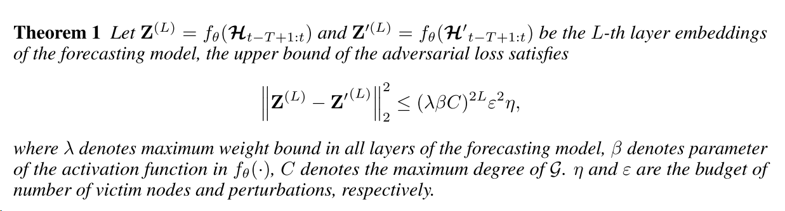
但是后面这几个参数都比较陌生，尤其是
灰盒下对抗算法如下：
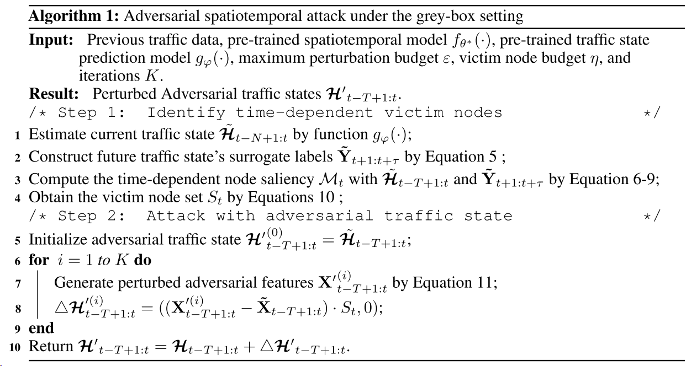
第一步识别受害节点，第二步进行K次迭代，每次生成对抗样本X'，即对抗时空特征，然后计算
5 实验
5.1 实验设置
数据集。我们使用两个流行的真实世界数据集来证明所提出的对抗性攻击框架的有效性。(1)PEMS-BAY [18]交通数据集来自加州运输机构（CalTrans）绩效测量系统（PeMS），范围为2017年1月1日至2017年5月31日。湾区的325个交通传感器每5分钟收集一次交通数据。(2)METR-LA [19]是从207个洛杉矶县道路传感器收集的交通速度数据集。交通速度每5分钟记录一次，范围从2012年3月1日至2012年6月30日。对于评估，所有数据集都是按时间顺序排列的，我们将前70%用于训练，接下来的10%用于验证，其余20%用于测试。两个数据集的统计量报告见附录C。
基线。在目前的文献中，很少有研究可以直接应用到实值流量预测攻击设置。为了保证比较的公平性，我们构建了如下两步基线。对于受害者节点识别，我们采用随机选择并使用基于拓扑的方法（即，节点度和介数中心性[20]）来选择受害者节点。我们还使用PageRank（PR）[21]作为基准来决定受害者节点的集合。对于对抗性交通状态生成，我们采用两种广泛使用的基于迭代梯度的方法PGD [8]和MIM [9]来生成对抗性扰动。总之，我们构建了八个两步基线，PGDRandom，PGD-PR，PGD-Centrality，PGD-Degree，MIM-Random，MIM-PR，MIM-Centrality和MIM-Degree。例如，PGD-PR表示首先使用PageRank识别受害者节点，然后使用PGD应用对抗性噪声。根据对抗扰动方法，我们比较了我们提出的框架的两个变体，即STPGD-TDNS和STMIM-TDNS。
这表示我们的方法是基于找出显著性节点的时空投影梯度下降法。
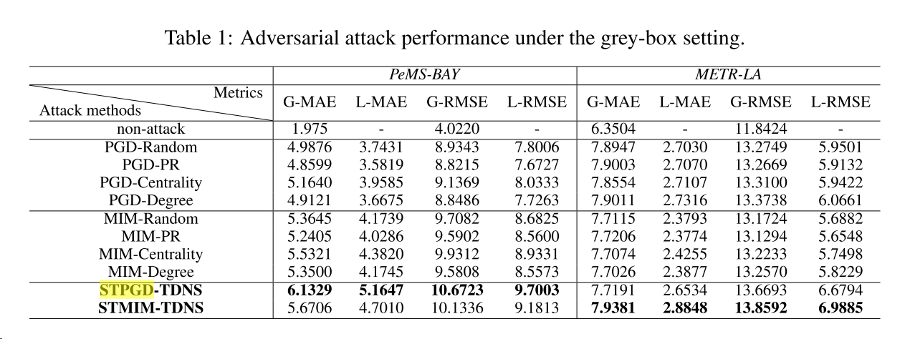
结果很好。
目标模型。为了评估所提出的对抗性攻击框架的泛化能力，我们采用了最先进的时空流量预测模型GraphWaveNet（Gwnet）[2]作为目标模型。
评价指标。我们的评估集中在对抗性攻击对时空模型的全局和局部影响，
其中L（·）是用户定义的损失函数。不同于对抗性攻击的大多数目标是分类模型（例如，对抗精度），流量预测被定义为回归任务。因此，我们采用平均误差（MAE）[22]和均方根误差（RMSE）[23]进行评估。更具体地说，我们定义了全局MAE（G-MAE），局部MAE（L-MAE），全局RMSE（G-RMSE），局部RMSE（L-RMSE）来评估对抗性攻击对流量预测的影响。
实施细节。所有实验均使用PyTorch实现，在具有4个RTX 3090 GPU的Linux服务器上进行。流量速度归一化为[0，1]。输入长度T和输出长度τ被设置为12。我们从所有节点中选择10%的节点作为受害节点，ε设置为0.5。批量大小γ设定为64。迭代K被设置为5，并且步长α被设置为0.1。
5.2 总体攻击表现
我们的对抗性攻击框架成功地破坏了流量预测模型，做出了有偏见的预测。
5.3 消融研究
我们考虑我们的方法的两种变体：（1 TDNS，随机选择受害者节点进行攻击，以及（2）STPGD，将普通PGD噪声应用于选定的受害者节点。
上述结果证明了两步框架的有效性。此外，我们观察到STPGD模块在对抗时空攻击中起着更重要的作用。
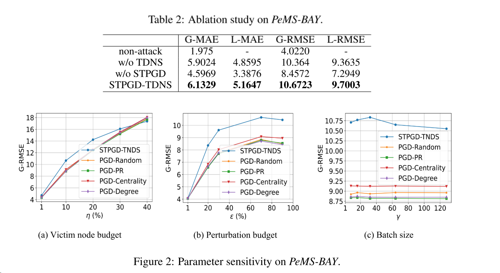
5.4 参数敏感性
我们进一步研究了该框架的参数敏感性，包括受害节点数η、扰动预算ε和批次大小γ。由于页数限制，我们在PeMS-Bay数据集上报告了G-RMSE的结果。我们通过使用其他指标和在METR-LA数据集上观察到类似的结果。每次更改一个参数时，都会将其他参数设置为其缺省值。
参数的影响如上图所示。前两个好理解，一个是受害节点数目，一个是扰动预算，太大的批量大小降低了攻击性能，这可能导致方程8的过度平滑。
5.5 不同攻击设置下的扩展分析
表3报告了我们提出的方法在白盒和黑盒攻击设置下针对原始预测模型和四个基于PGD的基线的整体攻击性能。对于白盒攻击，由于攻击者可以完全访问数据和模型，因此我们重新训练预测模型，而无需估计最新的流量状态。对于黑盒攻击，我们采用STAWNET [12]作为代理模型。
首先，我们发现对抗攻击在白盒和黑盒两种情况下都会显著降低流量预测模型的性能。例如，在白盒和黑盒攻击下，该方法与普通预测模型相比，总体性能分别下降了(68.65%，66.12%)和(56.67%，50.78%)。此外，我们的方法始终如一地在基线上获得最佳的攻击性能。更具体地说，我们的方法在白盒设置和黑盒设置下分别产生(4.61%，9.13%)和(1.70%，3.28%)全局性能改进。
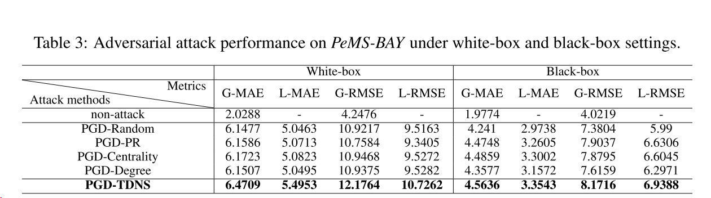
另外，我们发现白盒设置下的攻击效率比灰盒设置下的攻击效率高，黑盒设置下的攻击效率比灰盒设置下的攻击效率低。这是有意义的，因为白盒设置可以完全访问数据和标签，而黑盒具有更多的限制数据可访问性，并依赖代理模型来应用对抗性时空攻击。
5.6 防御对抗性时空攻击
最后，我们研究了对抗性时空攻击的防御。我们研究的一个主要目标是帮助提高时空预测模型的鲁棒性。因此，我们建议将交通预测模型的对抗训练方案与我们的对抗交通状态(用AT-TNDS表示)相结合。我们将其与(1)传统的对敌训练(AT)[8]和(2)将[24]与我们的对敌交通状态混淆。值得注意的是，我们也尝试了其他策略，如添加L2正则化等，但这些策略无法防御对抗性时空攻击。其他最先进的对抗训练方法，如TRADE[25]，不能直接应用于回归任务。
表4报告了pms - bay上G-MAE的结果。总的来说，我们观察到AT或Mixup能够成功抵抗对抗性时空攻击，将对抗性训练方案与我们的对抗性流量状态相结合的AT- tdns能够获得最佳的防御性能。上述结果表明了对抗性时空攻击的可防御性，为提供更可靠的时空预测服务，还需要进一步研究。
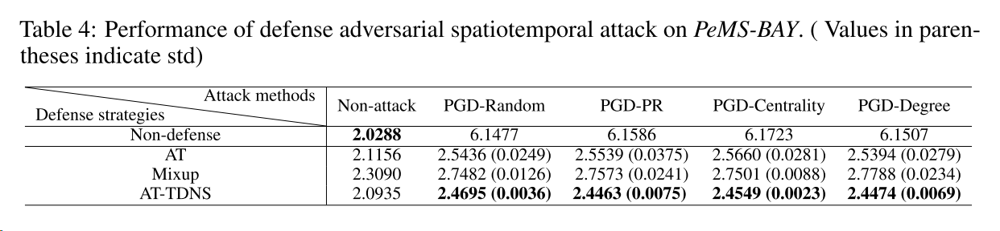
6 相关工作
时空交通预测。近年来，基于深度学习的交通预测模型因其在联合建模时空相关性方面的优势而得到了广泛的研究[10,11,6,26,2,12,27,28]。例如，STGCN[10]应用图卷积和门控因果卷积来捕获交通域的时空信息，ASTGCN[11]提出了用于捕获动态时空相关性的时空注意网络。另一个例子是，GraphWaveNet[2]自适应地捕获潜在的空间依赖关系，而不需要对图结构的先验知识。上述模型的主要目标是实现更准确的交通预测。时空交通预测模型的脆弱性仍然是一个有待研究的问题。
对抗性攻击。深度神经网络已被证明容易受到敌对例子的攻击[8,14]。作为一个新兴的方向，人们提出了各种针对图结构数据的对抗性攻击策略，包括目标攻击和非目标攻击[29,30]。然而，现有对抗攻击的研究主要集中在具有静态标签的分类任务上[9,24]。只有少数研究基于GCN的时空预测模型在基于查询的攻击[31]下的脆弱性，以及基于进化算法[32]生成对抗实例。本文研究了针对时空流量预测模型的基于梯度的对抗性攻击方法，该方法不依赖于模型，可推广到各种攻击设置，即白盒攻击、灰盒攻击和黑盒攻击。
7 代码复现
暂且没复现，试了以下环境好难配，目前专注于车道线预测的对抗样本生成。以后需要再补。